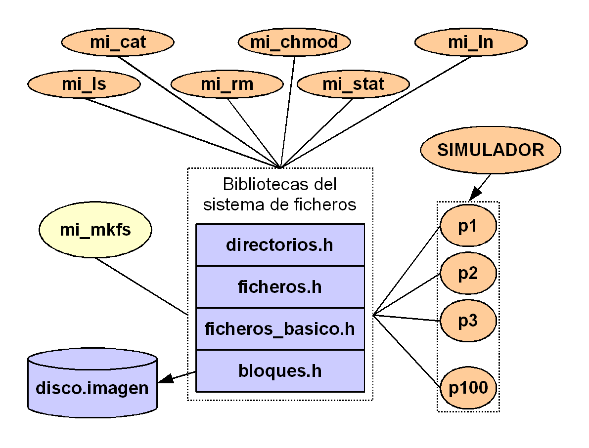
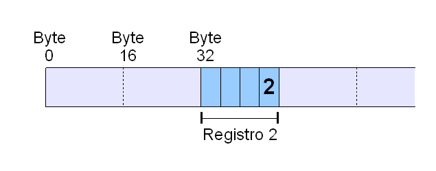

Práctica de Ampliación de Sistemas Operativos
Curso 2010/11
Introducción
La práctica implementará un sistema de ficheros en disco, el módulo de gestión de ficheros del sistema operativo y la interacción de procesos de usuarios.

Estructura general
La práctica estará compuesta por los siguientes elementos:
-
Un conjunto de bibliotecas, divididas en niveles, que proporcionan las primitivas para acceder al sistema de ficheros y gestionarlo.
-
Un programa mi_mkfs para crear, con la ayuda de dichas bibliotecas, el sistema de ficheros en el disco.
El sistema de ficheros estará realmente contenido en un fichero disco.imagen del sistema operativo con la siguiente estructura:
-
Un programa que muestre el contenido de un fichero por pantalla (mi_cat), uno que cambie sus permisos de acceso (mi_chmod), uno uno que cree enlaces físicos (mi_ln), uno que liste directorios (mi_ls), uno que borre ficheros y directorios (mi_rm), uno que muestre la metainformación de un fichero (mi_stat).
Estos programas acceden al sistema de ficheros a través de las primitivas de las bibliotecas.
Su funcionamiento es similar al funcionamiento básico de los correspondientes programas cat, chmod, ln, ls, rm/rmdir, stat de GNU/Linux.
-
Un programa simulador encargado de crear unos procesos de prueba que manejen ficheros de modo que se pueda comprobar el correcto funcionamiento de las citadas bibliotecas.
Requerimientos
Los requerimientos mínimos son:
-
El sistema de ficheros deberá ser jerárquico con estructura de árbol; es decir, deben poder crearse subdirectorios.
-
El sistema de ficheros debe ser indexado (inodos de 128 bytes con 12 punteros directos, 1 puntero indirecto simple, 1 puntero indirecto doble y 1 puntero indirecto triple).
- Cada fichero (es decir, cada inodo) tendrá una metainformación mínima necesaria para las primitivas.
-
El sistema de ficheros debe estar preparado para trabajar con un tamaño de bloque comprendido entre 512 bytes y 4.096 bytes.
-
El nombre del fichero (disco.imagen) que almacenará el sistema de ficheros deberá ser dinámico; es decir, no estará definido en los programas fuentes.
-
La asignación de espacio a los ficheros deberá ser dinámica: se asignarán nuevos bloques a medida que hagan falta.
-
En las bibliotecas deben implementarse métodos de control de concurrencia para acceder a los datos de gestión del sistema de ficheros (superbloque, mapa de bits y array de inodos): hay que definir secciones críticas y usar semáforos donde corresponda.
- Dentro de las bibliotecas no se ha de controlar el acceso
concurrente de varios procesos a los datos de un mismo fichero.
Si hace falta, los procesos externos deberán encargarse de dicho control.
Primitivas de acceso
Las siguientes operaciones son las mínimas que deben estar programadas en las bibliotecas del sistema de ficheros:
-
mi_dir
Obtiene el contenido de un directorio en una cadena de caracteres (puede separar su contenido por ':') y obtiene el número de ficheros listado.
-
mi_stat
Obtiene la metainformación de un fichero (es decir, la de su inodo).
-
mi_read
Lee una cantidad determinada de bytes de un fichero, desde una posición inicial, los pone en un buffer de memoria y obtiene la cantidad total de bytes leídos.
-
mi_write
Escribe en un fichero, desde una posición inicial, una cantidad determinada de bytes a partir de un buffer de memoria y devuelve la cantidad total de bytes escritos.
-
mi_creat
Crea el fichero especificado.
-
mi_link
Crea el enlace de una entrada de directorio al inodo especificado por otra entrada de directorio. - mi_unlink
Borra el enlace físico especificado y, en caso de que sea el último existente, borrar el propio fichero. - mi_chmod
Cambia los permisos de acceso al fichero.
Simulación
La simulación consta de tres partes.
1) Escrituras
simultáneas en el sistema de ficheros
Antes de comenzar, se creará el directorio "simul_aaaammddhhmmss", donde aaaa es el año, mm es el mes, dd es el día, hh es la hora, mm es el minuto y ss es el segundo de creación.
Se han de generar 100 procesos de prueba cada 0,2 segundos. Cada proceso creará un directorio llamado "proceso_n", donde n es el PID del proceso, dentro del directorio "simul_aaaammddhhmmss".
Además, dentro del directorio "proceso_n", cada proceso creará un fichero "prueba.dat".
Cada 0,05 segundos
cada proceso escribirá dentro del fichero "prueba.dat" 50 veces un registro
(binario), de 16 bytes, con la siguiente estructura de datos:
- Entero con la fecha y hora en forma epoch
- Entero con el PID del proceso que lo creó
- Entero con el número de escritura (de 1 a 50)
- Entero con la posición del registro dentro del fichero (número de
registro)
Esta
posición se elegirá de manera aleatoria, teniendo en cuenta que el
registro puede ocupar cualquier ubicación dentro del espacio de datos
del fichero. De esta manera comprobaremos el correcto funcionamiento de
los punteros directos e indirectos de los inodos.
No importa si
algún registro sobreescribe alguno de los registros anteriores.

2) Verificación de
las escrituras
Cuando acaben las
escrituras, otro programa independiente verificará el fichero "prueba.dat"
de cada proceso y generará la siguiente información:
- Proceso: escribir el PID
- Número de escrituras: escribir el contador de los registros validados dentro del fichero "prueba.dat" (se validan verificando que el campo PID coincida)
- Primera escritura: escribir la menor fecha y hora en forma epoch y el el número de escritura en
que ocurrió
- Última escritura: escribir la mayor fecha y hora en forma epoch y número de escritura en que ocurrió
- Menor posición: escribir la posición más baja y el número de escritura en que ocurrió
- Mayor posición: escribir la posición más alta y el número de escritura en que ocurrió
3) Pruebas con mi_cat, mi_chmod, mi_ln, mi_ls, mi_rm, mi_stat
Por último, con la
ayuda de la infraestructura recién creada, diseñar un script (o varios scripts) que muestre el correcto
funcionamiento de los programas mi_cat,
mi_chmod, mi_ln, mi_ls, mi_rm, mi_stat
desarrollados.